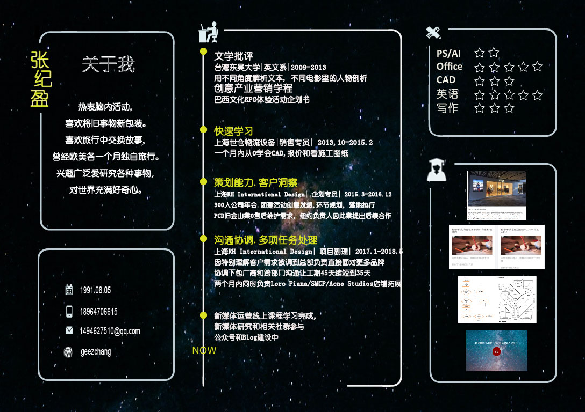

时光倒转回20岁，你会选择做哪个改变？
重启
A．不顾他人劝阻，转到自己感兴趣的专业
B．去澳洲打工，并创立自己小小的事业
C．和暗恋已久的人表白
转到新的专业后，发现…
A．班上的牛人太强，自己根本跟不上
B．新专业有很多额外的费用，家里无法支撑，需找兼职
C．同学都自成一个小圈圈，融入不了
到澳洲后，发现…
A．创业项目因澳洲当地法规限制，需要再6个月才能落地
B．原本谈好的一个当地合伙人反悔了
C．饮食习惯和水土不服，生病了两个月
你约了那个TA在学校对面的咖啡厅,结果…
A．TA 临时有事来不了了
B．TA出现了，并比你先表白
C．TA带了一个同性朋友一起來
於是…
A．來了个热血辅导老师，每周免费帮你答疑
B．跟朋友借钱报了校外补习班
C．连两学期挂科， 放弃念大学
於是…
A．第一个月业绩优异，老板有意提拔你为正职主管
B．攒了三个月工资， 把大部分给在老家的父母
C．老板拖欠工资， 下学期学费成燃眉之急
於是…
A．小A带动全班挤兑你
B．找不到人分组报告，请老师帮忙
C．找了隔壁班被挤兑的一起作朋友
於是…
A．选择回国
B．先做起路边摊，天天躲警察
C．和朋友借钱，渡过这段时间
於是…
A．每天拜访合伙人，直到TA被说服为止
B．有个人听闻你的项目，有意愿当合伙人
C．要不自己一个人试试吧
於是…
A．选择回国
B．家人知道了，搭飞机来看你
C. 把这段国外生病体验写成鸡汤博客
於是…
A．被隔壁桌的TA搭讪
B．TA和你约了隔天的时间
C. 刚好碰到许久不见的高中闺蜜, 两人谈天说地
於是…
A．要离开时, TA说家里困难，需要先借点钱
B 最后TA坦白，表白是玩笑，是跟朋友的一个无聊游戏
C. 离开咖啡厅后，收到前任希望复合的消息
於是…
A．虽然没有明说，但你知道TA想撮合你和TA朋友
B．因为有别人不好意思表白，最后付了三个人的咖啡钱
C. TA朋友竭尽全力推销产品，才知道TA也是下线
最终，是每个选择成就我们的人生。
In the end, we are our choices.
Try me
点我
